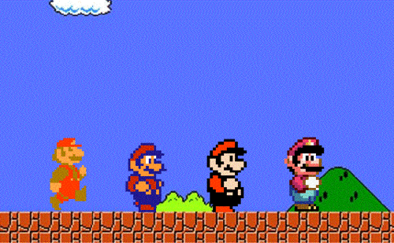

Super Mario Bros. es un videojuego de
plataformas, diseñado por Shigeru Miyamoto, lanzado el 13 de septiembre de 1985 y producido por la empresa
japonesa Nintendo, para la consola Nintendo Entertainment System. El juego describe las aventuras de los
hermanos Mario y Luigi, personajes que ya protagonizaron el arcade Mario Bros. de 1983. En esta ocasión
ambos deben rescatar a la Princesa Peach del Reino Champiñón que fue secuestrada por el rey de los Koopas,
Bowser. A través de ocho diferentes mundos, los jugadores pueden controlar a alguno de los dos hermanos y
deben enfrentarse finalmente tras los niveles correspondientes de cada mundo a los monstruos de cada
castillo para rescatar a la Princesa Peach.
JUGAR